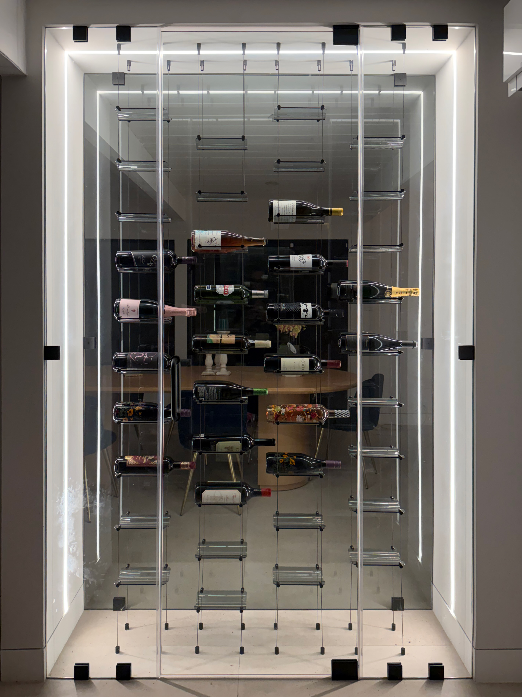
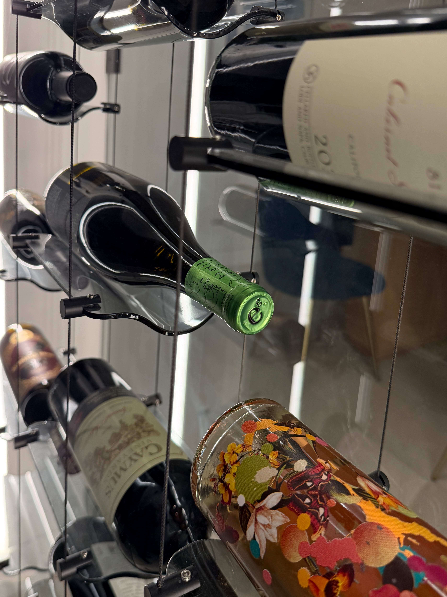
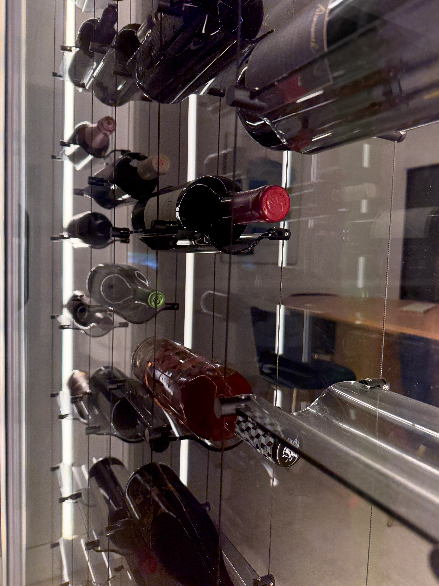
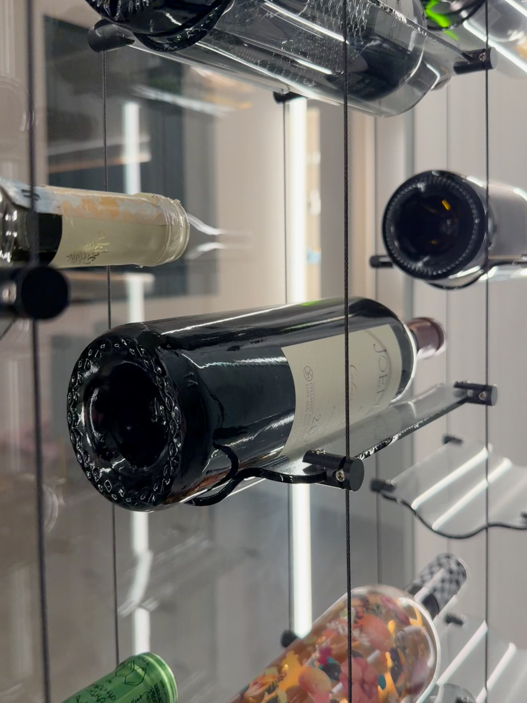

Perspective & Depth
Precision Engineering
Viewed from any angle, the repeated lines of cable, glass, and bottle forms reveal the precision behind each installation — engineered for visual depth and structural integrity.
Start a conversation →
Cable & Cellar
Floating wine gallery installations designed for modern homes across the Bay Area.
Floating wine displays designed as part of the architecture of the home.
Marine-grade stainless steel cable systems with crystal-clear bottle supports.
Frameless glass enclosures transform wine storage into a visual centerpiece.

Lifestyle Integration
Positioned between kitchen and dining spaces, a floating wine gallery becomes part of the entertaining experience — accessible, visible, and integrated into the architecture of the home.
Schedule a consultation →
Perspective & Depth
Viewed from any angle, the repeated lines of cable, glass, and bottle forms reveal the precision behind each installation — engineered for visual depth and structural integrity.
Start a conversation →
Engineering Detail
Each bottle rests on a transparent glass rack mounted to a stainless steel cable support system. The result is a display where the wine appears to float — the hardware nearly invisible.
Discuss your installation →The System
How It Works
We evaluate your space and develop a floating wine display concept tailored to your home.
Cable wine systems, glass panels, and structural components are installed by professional contractors.
The finished wine gallery becomes a permanent design feature within the home.
Complimentary design consultation · Bay Area service area
Custom Installations
Service Area
Cable & Cellar designs and installs floating wine galleries for modern homes throughout the Bay Area, including:
About the Founder
I'm a Monte Sereno-based engineer with a lifelong passion for design and architecture. For years I've been drawn to the intersection of craft and beauty — the way a well-considered space transforms how you feel inside it. I founded Cable & Cellar to bring that sensibility to something I care about deeply: wine displayed not as storage, but as architecture. Every installation I design is built with the rigor of an engineer and the eye of someone who believes the details are everything.
Start Your Project
Schedule a consultation to explore how a floating wine display can be integrated into your home.
Complimentary design consultation · Bay Area service area
Or call directly +1 (408) 877-4537